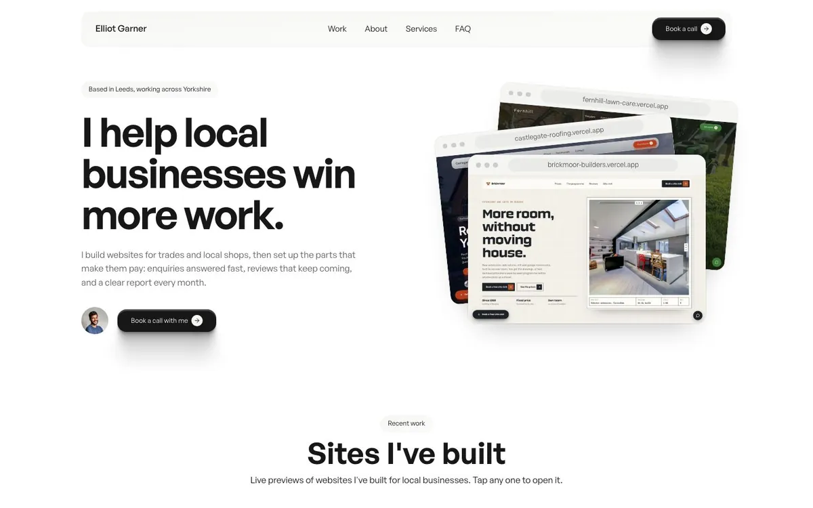
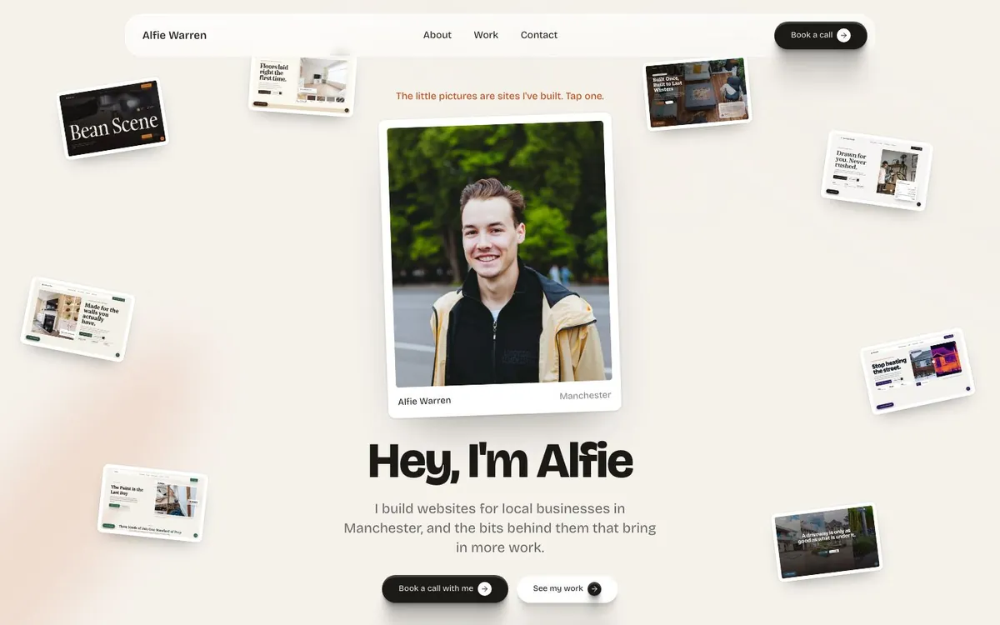
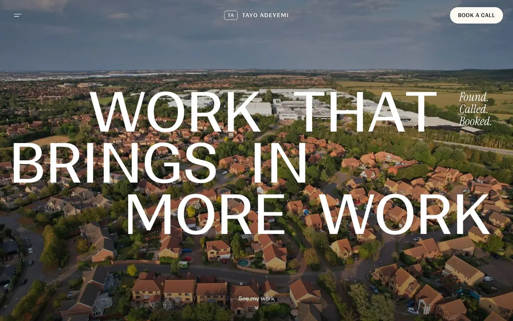

Studio
Clean and white. Your work sits right next to the headline, then six live previews, services and an FAQ.
Open StudioThis is the site you put at the bottom of your outreach, so a business owner can check you're a real person. Three styles, same parts on every one. Open each to see it working, then make your favourite yours.

Clean and white. Your work sits right next to the headline, then six live previews, services and an FAQ.
Open Studio
Warm and friendly. A big framed photo of you with your sites scattered round it, then a bit about you and your work.
Open Personal
High end. A full-screen photo of your town with giant type, then your sites lettered A to E in one big live frame.
Open Editorial